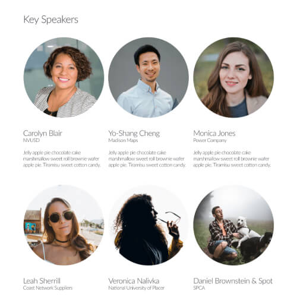
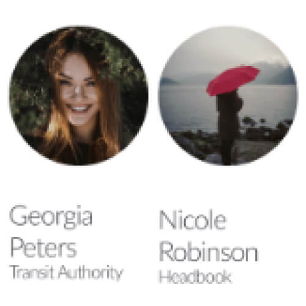
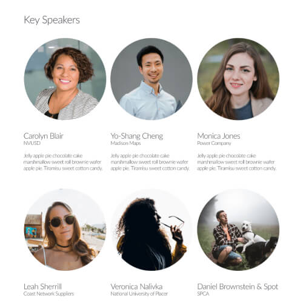
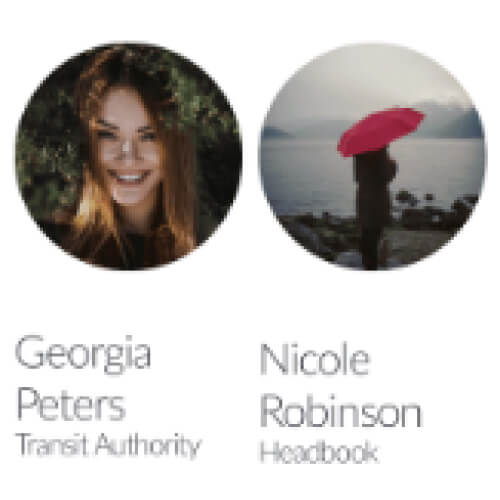
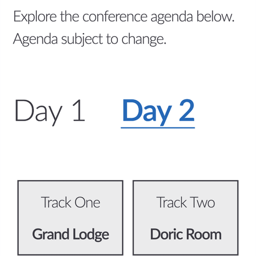
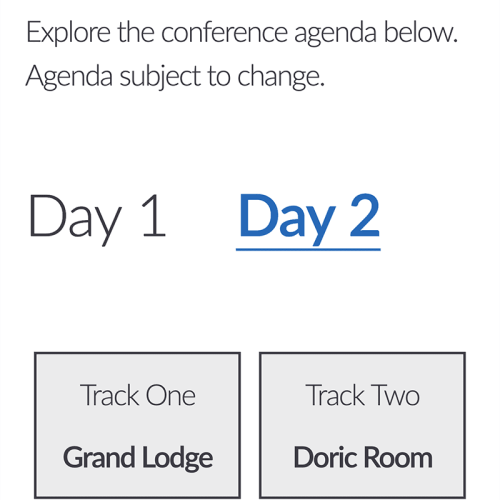

Style and Mocks
Along the way in the journey to create the logo I prepared mocks of each prototype so the stakeholders could see it in action. This included seeing it as a conference banner and a website mock. Since I worked with a lot of logos over the years I also knew that it was going to appear on a variety of different backgrounds and that has an effect on how the mark is viewed. I provided the prototype logos on different backgrounds so the stakeholders could get a better real world idea of how the logo would exist. With the logo set we needed a style to go with it. Since the conference is related to Noggin we didn't want to stray too far away from the Noggin branding, but we also wanted it to be its own style. With the time crunch looming we couldn't go into deep dives exploring colors and type, so we took elements from the newly created logo and from the Noggin branding to come up with a very Australian centric theming that worked beautifully. This style gave us the versatility to adapt to web assets, social media images, printed banners, and much more.
Click to expand images
Click to expand the full pages
 



 

Website
With the logo and style of the conference set we needed to blend it all together to create a compelling website for the event. After researching industry relative conference websites I was able to distill down the important information needed to be on the site. This included information about the conference, the speakers, the agenda, and most importantly a way to sign up! Our site would be created and hosted on HubSpot and I had no technical support so I would be the one to design and code the pages. I knew a high percentage of our users would be viewing the site on mobile so I wanted to make sure the design was scalable to both small and large screens. This was most important with the agenda, as users would be using it while on the go at the conference. Check out my project study on how I created the agenda page for the conference. The homepage featured a countdown timer to put a little pressure on the visitor with a registration button close by.
Social Media and Other Assets
With a website built we now needed to drive traffic to it and to registration. We leveraged social media to get the word out about the conference and created several assets for awareness, a new speaker, a new session, and important registration dates. I also created brochures, email signatures, email headers and more. Each asset was created in the same style as the website to ensure a cohesive branding experience for users going between each touch point in our process.
Click to expand images

Conclusion
The Noggin User Conference was a success in both terms of branding and attendance. Having a defined and well executed branding helped create a high end experience for the users from tweet to presentations. In a perfect world, I would have liked to give it more thought process on minor elements but given the time crunch our end product worked out great.